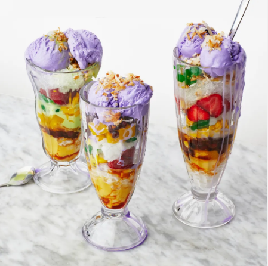

Halo Halo Dessert
HALO-HALO
Halo-halo is one of my favorite summertime desserts. From the Philippines—the name means “mix-mix" in Tagalog—the refreshing dish layers shaved ice and condensed milk on top of all sorts of ingredients for an end result that packs in lots of contrasting textures, from chewy to crunchy, creamy to sticky. While components vary, you'll find some common add-ins at most halo-halo carts and bars: jellies, flan, macapuno, palm seeds, sweetened red beans, shaved ice, ube ice cream, fresh fruit, toasted coconut flakes, pinipig. My version uses mango jelly with fresh fruit set into it as well as pandan-infused sweetened condensed milk.
I encourage you to choose your own adventure, layering the elements in a tall glass or wide bowl. Make sure to use a long-handled spoon to reach everything, and for mixing and swirling. By the end, once things are mostly melted, you can practically drink it.
THE HALO-HALO
Preparation
MANGO JELLY
Step 1
Blend lime zest, lime juice, mango nectar, half of mangoes, and a small pinch of salt in a blender until very smooth.
Step 2
Heat gelatin and ½ cup water in a small saucepan over medium heat, stirring constantly until gelatin is dissolved. Remove from heat and stir in mango purée. Pour jelly into a 9x5" loaf pan. Carefully add remaining mangoes and stir to combine. Cover jelly tightly and chill until set, 20-30 minutes.
Do ahead: Mango jelly can be made 5 days ahead. Keep chilled.
FLAN
Step 3
Place a rack in middle of oven; preheat to 350°. Cook sugar and 1 Tbsp. water in a small saucepan over medium heat, stirring until sugar is dissolved, then cook, undisturbed, swirling pan occasionally and brushing down sides with a wet pastry brush as needed, until mixture turns deep amber, 7-9 minutes. Scrape caramel into another 9x5" loaf pan.
Step 4
Whisk egg yolks, coconut milk, condensed milk, vanilla, and salt in a medium bowl to combine. Pour through a fine-mesh sieve into loaf pan with caramel. Cover with foil. Set inside a roasting pan and place on oven rack. Carefully pour hot water into roasting pan to come halfway up sides of loaf pan (a tea kettle makes this easy if you have one).
Step 5
Bake flan until just set in the center (it should still wobble a little when gently jiggled) and barely golden on top, 55–60 minutes. Let cool (still covered), then chill until cold, at least 4 hours.
Do ahead: Flan can be made 2 days ahead. Keep chilled.
CORN AND ASSEMBLY
Step 6
Spread out corn on a rimmed baking sheet. Sprinkle sugar and salt over, then drizzle oil over and toss to combine. Roast until crisped slightly but not yet browned and a little sticky, 12–15 minutes. Let cool.
Step 7
Meanwhile, bring sago pearls and ½ cup water to a simmer in a small saucepan and cook until translucent and firm-tender, 8–10 minutes. Drain, then combine in a small bowl with coconut milk, stirring well to separate pearls. Let cool.
Step 8
Toast coconut in a small skillet over medium heat until edges start to brown and crisp, about 5 minutes (be careful not to overcook).
Step 9
Cut flan into 1"pieces and divide some among tall glasses or wide bowls. Cut out mango jelly into desired shapes and arrange on top, then spoon in ice cream, condensed milk, shaved ice, strawberries, macapuno, palm seeds, corn, sago pearls, toasted coconut, red beans, and pinipig as desired.
Ingredients
- 50 pieces lumpia wrapper
- 3 cups cooking oil
Ingredients
MANGO JELLY
- Zest and juice of ½ lime
- ¼ cup mango nectar
- 2 ripe mangoes (preferably Ataulfo), peeled, cut into small cubes (about 2 cups)
- Kosher salt
- 1 envelope unflavored powdered gelatin (about 2½ tsp.)
FLAN
- ¼ cup plus 2 Tbsp. sugar
- 4 large egg yolks
- ½ cup plus 2 Tbsp. unsweetened coconut milk
- ½ cup sweetened condensed milk
- ½ tsp. vanilla extract
- ¼ tsp. kosher salt
CORN AND ASSEMBLY
- 2 ears of yellow corn, shucked, kernels removed
- 3 Tbsp. sugar
- 1 tsp. Diamond Crystal or ½ tsp. Morton kosher salt
- 1 tsp. vegetable oil
- ¼ cup small sago pearls
- 1½ cups unsweetened coconut milk
- ¼ cup sweetened shredded coconut
- 1 pint Ube ice cream (such as Wanderlust Creamery Ube Malted Crunch)
- 1 14-oz. can pandan or regular sweetened condensed milk
- 1 cup sliced strawberries
- ½ cup macapuno
- ½ cup drained palm seeds, dyed green or color of choice
- Sweetened red beans and store-bought toasted pinipig (for serving)